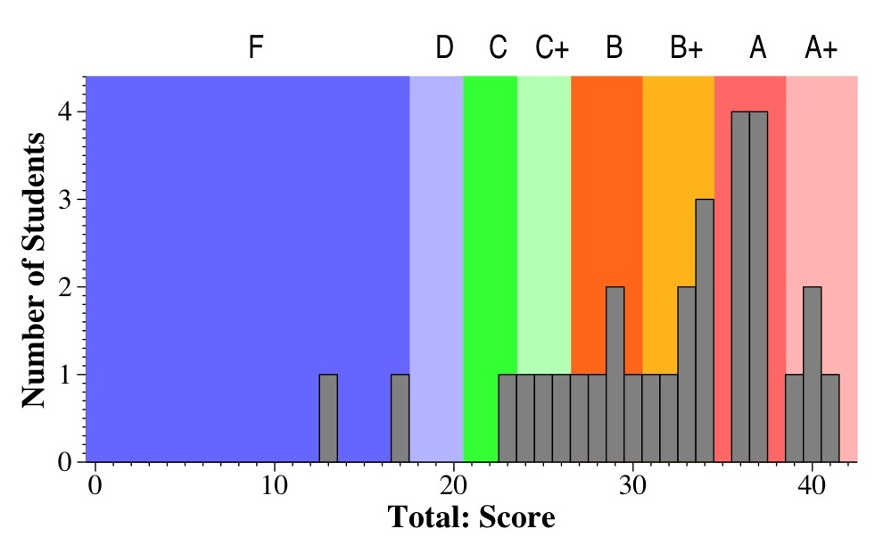
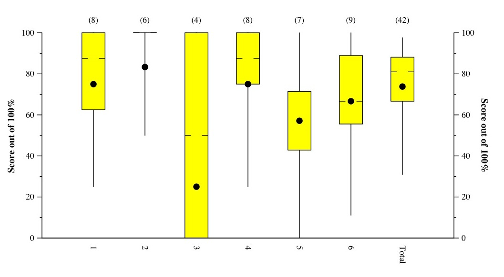
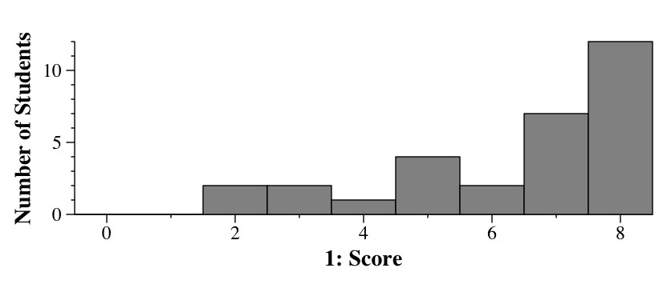
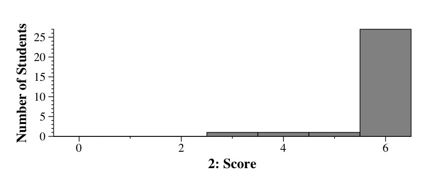
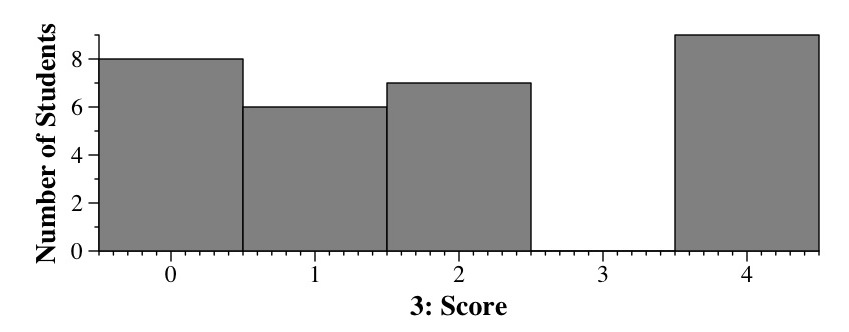
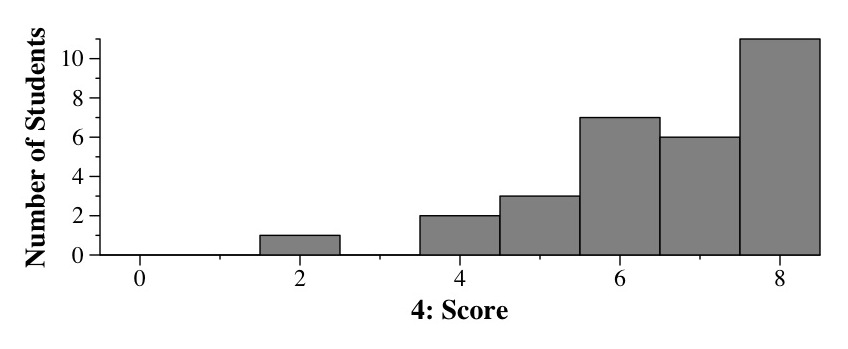
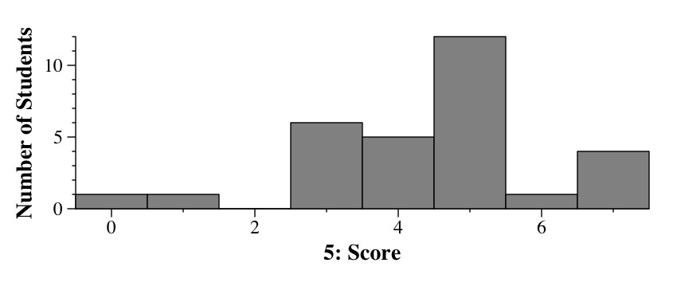
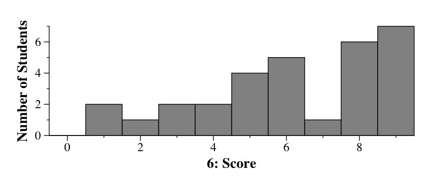

CS140 Final Exam - Fall, 2006
December 11, 2006
Jim Plank
Grades
This was by far the easiest exam I've ever given in CS140. Merry Christmas.
As always, I think of the A answers for each question, and the B answers,
and I break down the grades accordingly. Here are the ranges:
- A+: 39 - 42
- A: 35 - 39
- B+: 31 - 35
- B: 27 - 31
- C+: 24 - 27
- C: 21 - 24
- D: 18 - 21
- F: 0 - 18
Exam Scores

Tukey Plots

Question 1

Question 2

Question 3

Question 4

Question 5

Question 6
